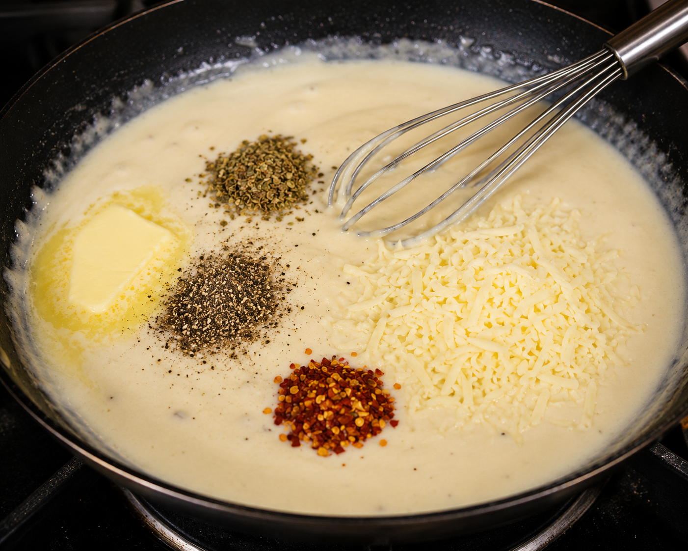

Steps to Follow:
- Melt 2 tablespoons butter in the same pan.
- Add 2 tablespoons flour.
- Stir continuously for about 1 minute.
- Slowly pour in the milk while whisking.
- Continue stirring to avoid lumps.
- Cook until the sauce thickens (about 5 minutes).
- Add:
- Salt
- Black Pepper
- Oregano
- Chili flakes
- Stir well.
- Add grated cheese.
- Mix until the cheese melts.